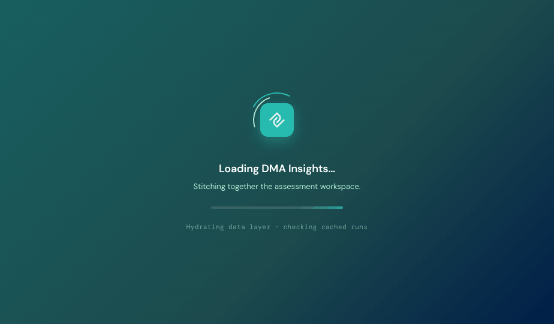
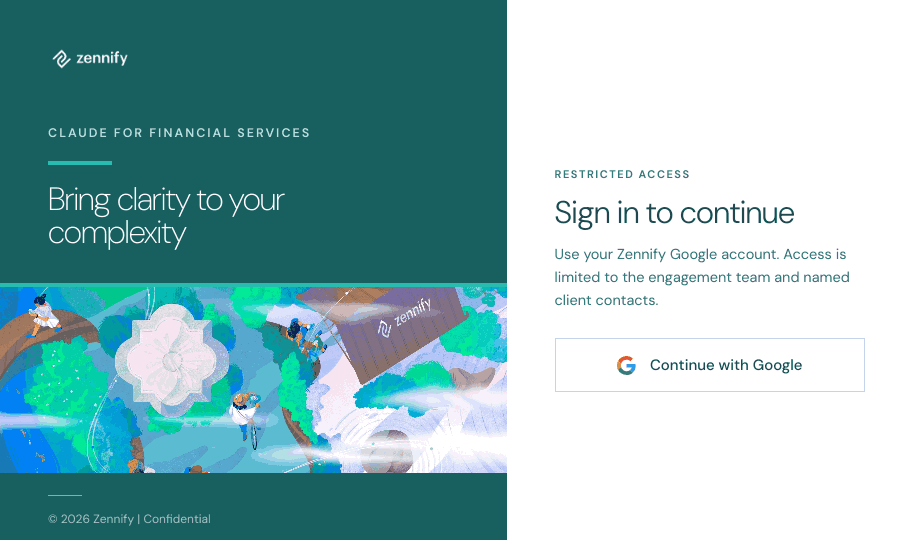

Project 01 · Zennify · in production
The digital maturity assessment platform for financial institutions, known internally as the Zennify insights platform. Research, scoring, enrichment, and a six-page client surface, built so that every claim on the page can be traced back to the evidence that justified it.
The problem
Maturity assessments for banks, credit unions, insurers, lenders, and wealth managers are sold on judgement. One unsupported score, one number that does not reconcile with the page before it, or one claim about a client's core system that nobody can source, and the whole document loses its authority.
Producing them by hand did not scale. Producing them in one large model pass scaled, and produced exactly those failures.
The approach
The application is the surface clients read. Behind it sits a separate multi-agent system that produces the content and a connector that is the only path by which content becomes serving content.
Those are deliberately separate projects. The platform can be improved without touching the production system, and vice versa.
The build
React and TypeScript on the front, Python and PostgreSQL behind it, deployed to Google Cloud Run with Terraform. Validated with end-to-end suites and more than three thousand five hundred pre-deployment pipeline tests.
A Gemini enrichment pipeline resolves company facts and leadership signals, with Clay filling the gaps the pipeline cannot. Every call is recorded, so a claim can only cite a source the record contains.
Overview, heatmap, platform fit, context, insights, and technology stack. Section ownership is explicit, which is what makes a targeted correction possible.
A governance playbook setting quality, evidence-rigour, and audit-traceability standards, with fixed cases replayed before any change ships.
The multi-agent production system that writes what this platform publishes. Forty-seven agents, eleven families, and sixty-five gates that can refuse. It is documented as its own project.
Prototype one

Prototype two, same platform

Documents
All six open in full. They are the working documents, not a version tidied up for a portfolio.
Who the platform serves, what an assessment must contain, and what counts as done.
Read the document →Services, model tiers, the connector contract, and the deployment topology on Google Cloud Run.
Read the document →The six client-facing pages, section by section, and which agent owns each one.
Read the document →The PostgreSQL model behind runs, evidence, scores, and payload versions.
Read the document →Sequencing, dependencies, and the order in which each piece became real.
Read the document →What the test suites cover, what they caught, and what was left open on purpose.
Read the document →Outcome
Delivered across banks, credit unions, insurance carriers and brokerages, lenders, and wealth and asset managers, under approval-gated, standards-aligned review.
The platform is the visible half. The production system that fills it is documented separately, as project 02.
Tech stack